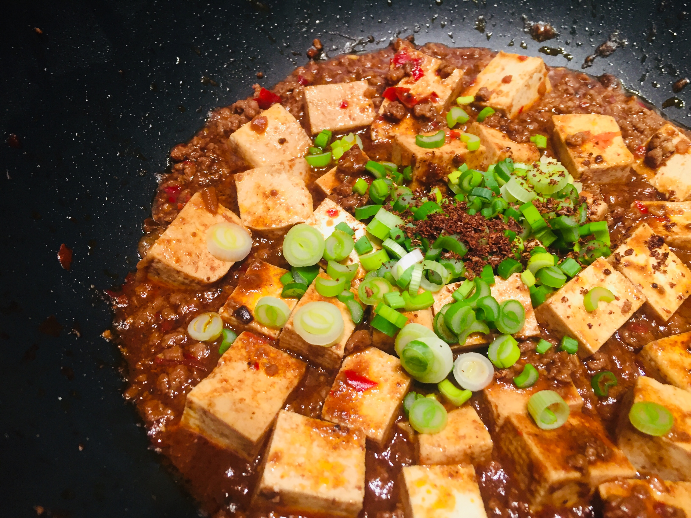

Mapo Tofu (麻婆豆腐)

Ingredients
- 1 block soft tofu, cubed
- 150g ground pork or beef
- 1 tbsp doubanjiang (chili bean paste)
- 1 tbsp soy sauce
- 1 tsp sugar
- 1 tbsp chili oil
- 1 tsp Sichuan peppercorn powder
- 2 cloves garlic, minced
- 1 cup water or broth
- 1 tbsp cornstarch mixed with 2 tbsp water
- 1 green onion, chopped
Instructions
- Heat oil in a pan and cook the ground pork until browned.
- Add doubanjiang and garlic, stirring until fragrant.
- Pour in water or broth and bring to a simmer.
- Add tofu cubes gently and simmer for 5 minutes.
- Season with soy sauce, sugar, and chili oil.
- Stir in the cornstarch slurry to thicken the sauce.
- Sprinkle Sichuan peppercorn powder and green onion on top.
- Serve hot with steamed rice.